Traffic signs give you important information about the law, warn you about dangerous conditions and help you find your way. Signs use different symbols, colours and shapes for easy identification.
Here are some of the many signs you will see on Ontario roads:
A stop sign is eight-sided and has a red background with white letters. It means you must come to a complete stop. Stop at the stop line if it is marked on the pavement. If there is no stop line, stop at the crosswalk. If there is no crosswalk, stop at the edge of the sidewalk. If there is no sidewalk, stop at the edge of the intersection. Wait until the way is clear before entering the intersection.
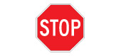
A school zone sign is five-sided and has a fluorescent yellow/green background with black symbols. It warns that you are coming to a school zone. Slow down, drive with extra caution and watch for children.
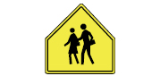
A yield sign is a triangle with a white background and a red border. It means you must let traffic in the intersection or close to it go first. Stop if necessary and go only when the way is clear.
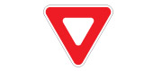
A railway crossing sign is X-shaped with a white background and red outline. It warns that railway tracks cross the road. Watch for this sign. Slow down and look both ways for trains. Be prepared to stop.
There are four other kinds of signs: regulatory, warning, temporary conditions and information and direction.
Regulatory signs
These signs give a direction that must be obeyed. They are usually rectangular or square with a white or black background and black, white or coloured letters. A sign with a green circle means you may or must do the activity shown inside the ring. A red circle with a line through it means the activity shown is not allowed.
Here are some common regulatory signs:
This road is an official bicycle route. Watch for cyclists and be prepared to share the road with them.
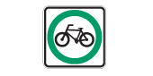
You may park in the area between the signs during the times posted. (Used in pairs or groups.)
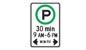
Snowmobiles may use this road.
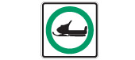
Do not enter this road.
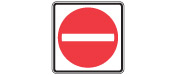
Do not stop in the area between the signs. This means you may not stop your vehicle in this area, even for a moment. (Used in pairs or groups.)
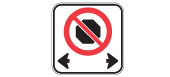
Do not stand in the area between the signs. This means you may not stop your vehicle in this area except while loading or unloading passengers. (Used in pairs or groups.)
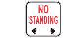
Do not park in the area between the signs. This means you may not stop your vehicle except to load or unload passengers or merchandise. (Used in pairs or groups.)
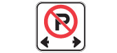
Do not turn left at the intersection.
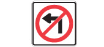
Do not drive through the intersection.
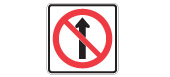
Do not turn to go in the opposite direction. (U-turn)
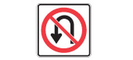
Do not turn right when facing a red light at the intersection.
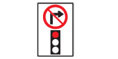
Do not turn left during the times shown.
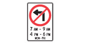
This parking space is only for vehicles displaying a valid Accessible Parking Permit.
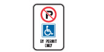
No bicycles allowed on this road.
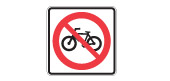
No pedestrians allowed on this road.
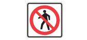
Keep to the right of the traffic island.
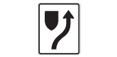
Speed limit changes ahead.
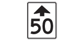
Do not pass on this road.

Slow traffic on multi-lane roads must keep right.

Indicates areas where the community has identified that there is a special risk to pedestrians. Traffic related offences committed within the zone are subject to increased fines.
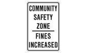
The speed limit in this zone is lower during school hours. Observe the speed limit shown when the yellow lights are flashing.
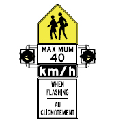
Stop for school bus when signals are flashing.
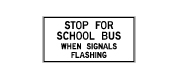
This sign is installed on multi-lane highways with no centre median divider. It informs drivers approaching from both directions that they must stop for a school bus when its signal lights are flashing.
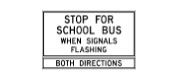
These signs, above the road or on the pavement before an intersection, tell drivers the direction they must travel. For example: the driver in lane one must turn left; the driver in lane two must turn left or go straight ahead; and the driver in lane three must turn right.
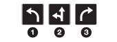
Traffic may travel in one direction only.
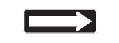
This is a pedestrian crossover. Be prepared to stop and yield right-of-way to pedestrians.
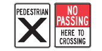
This sign, above the road or on the ground, means the lane is only for two-way left turns.
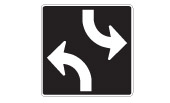
This sign reserves curb area for vehicles displaying a valid Accessible Person Parking Permit picking up and dropping off passengers with disabilities.
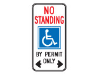
These signs mean lanes are only for specific types of vehicles, either all the time or during certain hours. Different symbols are used for the different types of vehicles. They include: buses, taxis, vehicles with three or more people and bicycles.
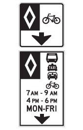
Keep to the right lane except when passing on two-lane sections where climbing or passing lanes are provided.

This sign on the back of transit buses serves as a reminder to motorists of the law requiring vehicles approaching a bus stopped at a dedicated Bus Stop to yield to the bus, once the bus has signalled its intent to return to the lane.
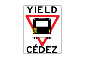
Road forks to the right.
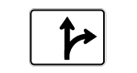
Marks a zone within which school buses load or unload passengers without using the red alternating lights and stop arm.
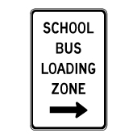
High Occupancy Vehicle (HOV) signs
Only public vehicles such as buses, or passenger vehicles carrying a specified minimum number of passengers, may use this lane.
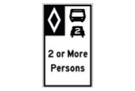
Vehicles cannot change lanes into or out of a high-occupancy vehicle lane in this area.
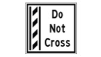
Warning signs
These signs warn of dangerous or unusual conditions ahead such as a curve, turn, dip or sideroad. They are usually diamond-shaped and have a yellow background with black letters or symbols.
Here are some common warning signs:
Narrow bridge ahead.
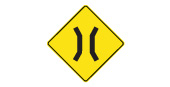
Road branching off ahead.
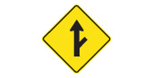
Intersection ahead. The arrow shows which direction of traffic has the right-of-way.
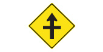
Roundabout Ahead. Reduce Speed. The counter-clockwise arrows show the direction of vehicle traffic within the roundabout.
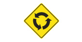
Drivers on the sideroad at the intersection ahead don't have a clear view of traffic.
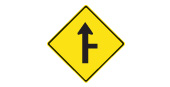
Pavement narrows ahead.
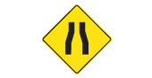
Slight bend or curve in the road ahead.
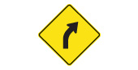
Posted under a curve warning, this sign shows the maximum safe speed for the curve.
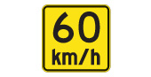
Sharp bend or turn in the road ahead.
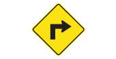
Chevron (arrowhead) signs are posted in groups to guide drivers around sharp curves in the road.
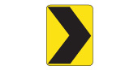
Winding road ahead.
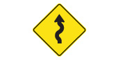
The bridge ahead lifts or swings to let boats pass.
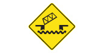
Paved surface ends ahead.
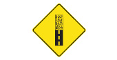
Bicycle crossing ahead.
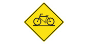
Stop sign ahead. Slow down.
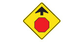
Share the road with oncoming traffic.
The share the road sign is used to warn motorists that they are to provide safe space on the road for cyclists and other vehicles. This sign also warns motorists and cyclists to exercise additional caution on the upcoming section of road.
Pavement is slippery when wet. Slow down and drive with caution.
Hazard close to the edge of the road. The downward lines show the side on which you may safely pass.
Divided highway begins: traffic travels in both directions on separated roads ahead. Keep to the right-hand road. Each road carries one-way traffic.
Right lane ends ahead. If you are in the right-hand lane, you must merge safely with traffic in the lane to the left.
Traffic lights ahead. Slow down.
Steep hill ahead. You may need to use a lower gear.
Two roads going in the same direction are about to join into one. Drivers on both roads are equally responsible for seeing that traffic merges smoothly and safely.
Snowmobiles cross this road.
Divided highway ends: traffic travels in both directions on the same road ahead. Keep to the right-hand road.
Underpass ahead. Take care if you are driving a tall vehicle. Sign shows how much room you have.
Bump or uneven pavement on the road ahead. Slow down and keep control of your vehicle.
Railway crossing ahead. Be alert for trains. This sign also shows the angle at which the railway tracks cross the road.
Sharp turn or bend in the road in the direction of the arrow. The checkerboard border warns of danger. Slow down; be careful.
Deer regularly cross this road; be alert for animals.
Truck entrance on the right side of the road ahead. If the sign shows the truck on the left, the entrance is on the left side of the road.
Shows maximum safe speed on ramp.
Watch for pedestrians and be prepared to share the road with them.
Watch for fallen rock and be prepared to avoid a collision.
There may be water flowing over the road.
This sign warns you that you are coming to a hidden school bus stop. Slow down, drive with extra caution, watch for children and for a school bus with flashing red lights.
Indicates an upcoming bus entrance on the right and vehicles should be prepared to yield to buses entering the roadway.
Indicates an upcoming fire truck entrance on the right and vehicles should be prepared to yield to fire trucks entering the roadway.
These signs warn of a school crossing. Watch for children and follow the directions of the crossing guard or school safety patroller.
Temporary condition signs
These signs warn of unusual temporary conditions such as road work zones, diversions, detours, lane closures or traffic control people on the road. They are usually diamond-shaped with an orange background and black letters or symbols.
Here are some common temporary condition signs:
Construction work one kilometre ahead.
Road work ahead.
Survey crew working on the road ahead.
Traffic control person ahead. Drive slowly and watch for instructions.
You are entering a construction zone. Drive with extra caution and be prepared for a lower speed limit.
Temporary detour from normal traffic route.
Flashing lights on the arrows show the direction to follow.
Pavement has been milled or grooved. Your vehicle's stopping ability may be affected so obey the speed limit and drive with extra caution. Motorcyclists may experience reduced traction on these surfaces.
Lane ahead is closed for roadwork. Obey the speed limit and merge with traffic in the open lane.
Closed lane. Adjust speed to merge with traffic in lane indicated by arrow.

Do not pass the pilot vehicle or pace vehicle bearing this sign.

Reduce speed and be prepared to stop.
Follow detour marker until you return to regular route.
Enforces doubling the HTA fines for speeding in a designated construction zone when there are workers present.
Information and direction signs
These signs tell you about distances and destinations. They are usually rectangular with a green background and white letters. Other signs with different colours guide you to facilities, services and attractions.
Here are some common information and direction signs:
Shows directions to nearby towns and cities.
Shows the distances in kilometres to towns and cities on the road.
Various exit signs are used on freeways. In urban areas, many exit ramps have more than one lane. Overhead and ground-mounted signs help drivers choose the correct lane to exit or stay on the freeway.
Advance signs use arrows to show which lanes lead off the freeway. Signs are also posted at the exit.
Sometimes one or more lanes may lead off the freeway. The arrows matching the exit lanes are shown on the advance sign in a yellow box with the word ‘exit' under them.
Freeway interchanges or exits have numbers that correspond to the distance from the beginning of the freeway. For example, interchange number 204 on Highway 401 is 204 kilometres from Windsor, where the freeway begins. Distances can be calculated by subtracting one interchange number from another.
The term 'VIA' is used to describe the roads that must be followed to reach a destination.
Shows the upcoming roundabout exits and where they will take you.
These signs change according to traffic conditions to give drivers current information on delays and lane closures ahead.
Shows off-road facilities such as hospitals, airports, universities or carpool lots.
Shows route to passenger railway station.
Shows route to airport.
Shows facilities that are accessible by wheelchair.
D sign – Oversize load
Other signs
Here are some other common signs:
The “slow-moving vehicle” sign is an orange triangle with a red border. It alerts other drivers that the vehicle ahead will be travelling at 40 km/h or less. When on a road, farm tractors, farm implements/machinery, and vehicles not capable of sustaining speeds over 40 km/h must display the slow moving vehicle sign. Watch for these slow moving vehicles and reduce your speed as necessary.
EDR signs are used during the unscheduled closure of a provincial highway when OPP detour all traffic off the highway. The EDR markers are located along alternative routes and provide direction to motorists around the closure and back onto the highway.
Long commercial vehicle (LCV)
This placard indicates a long commercial vehicle, which is a double trailer and can be up to 40 metres in length. It is important to be able to recognize an LCV on the highway, based on rear signage, and anticipate both the extended length and limited speed when preparing to pass one on the highway.

Emergency response signs
Some information signs include a numbering system along the bottom of the sign to assist emergency vehicles and drivers in determining an appropriate route.
Bilingual signs
Watch for these signs when driving in designated bilingual areas. Read the messages in the language you understand best. Bilingual messages may be together on the same sign or separate, with an English sign immediately followed by a French sign.
Summary
By the end of this section, you should know:
- The difference between regulatory, warning, temporary condition and information/direction signs
- How to read the symbols and messages of some common signs in each category